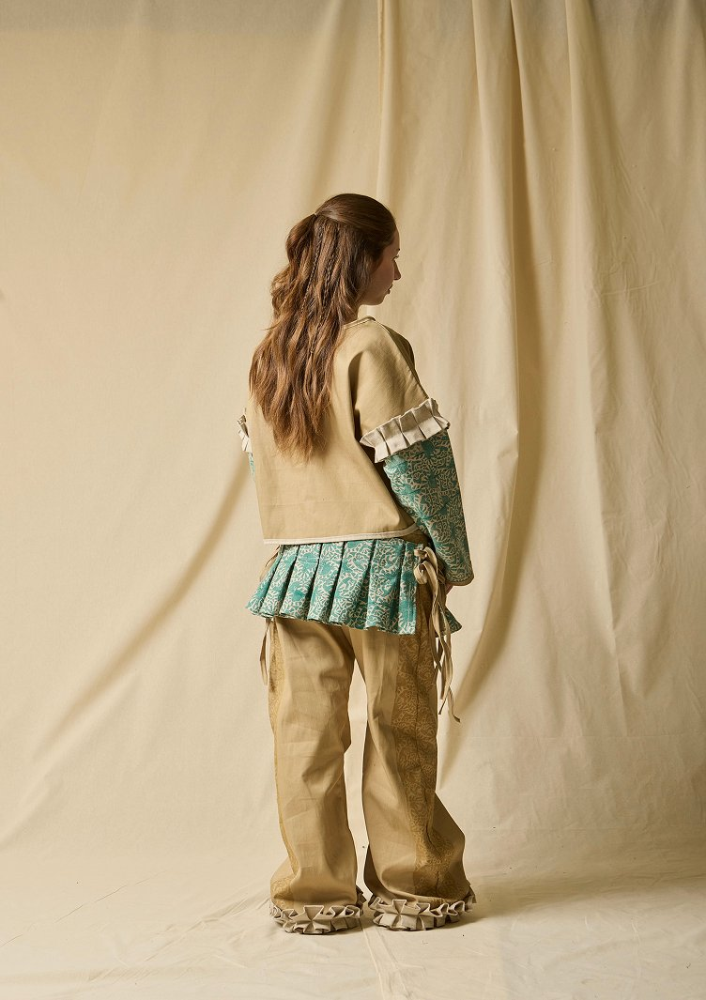
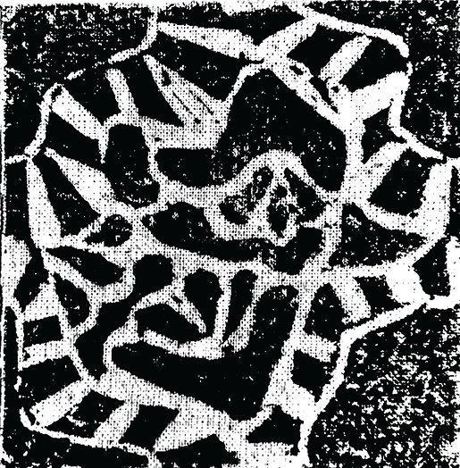
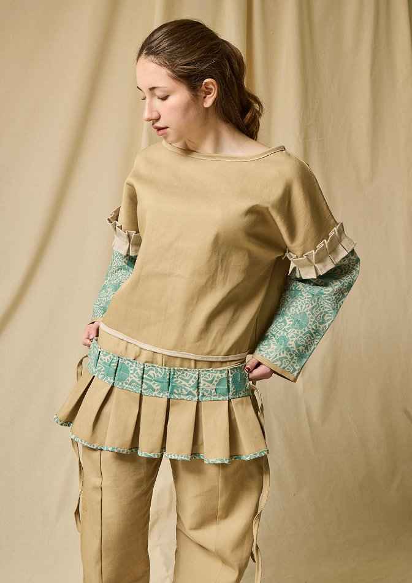
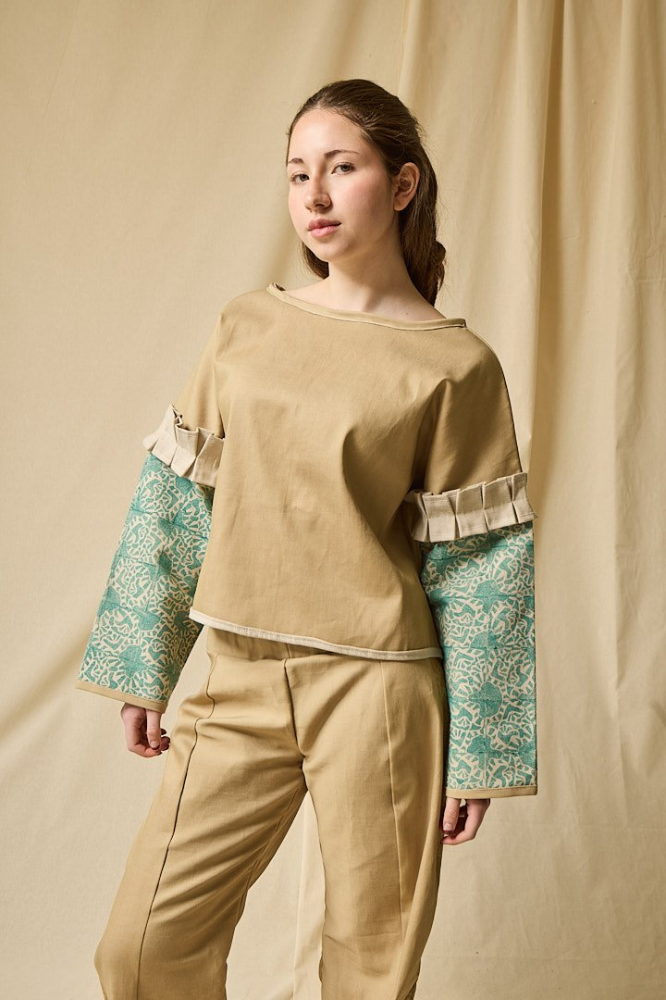
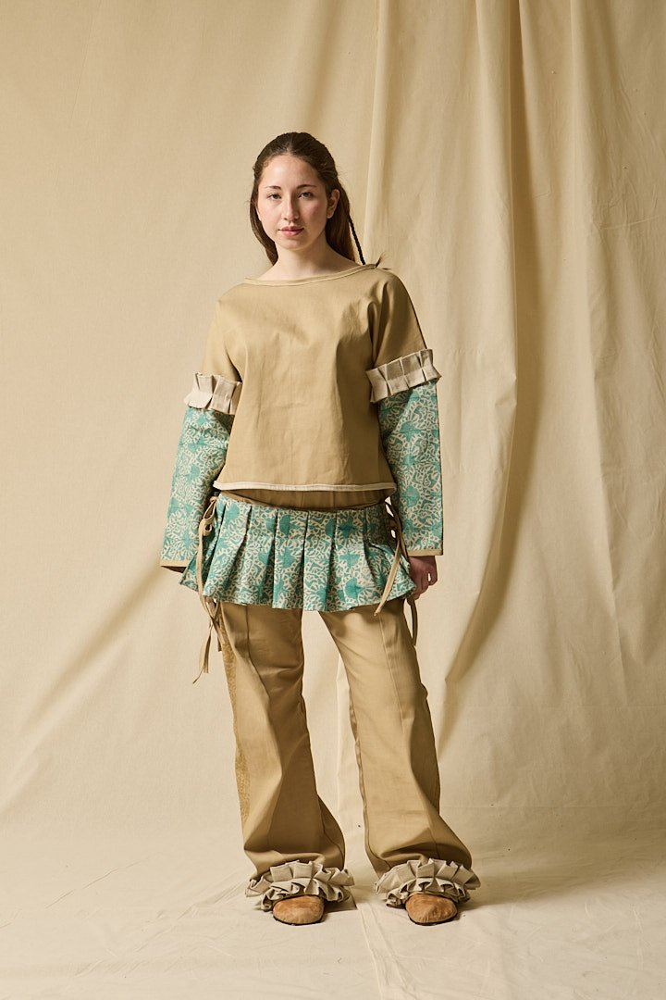
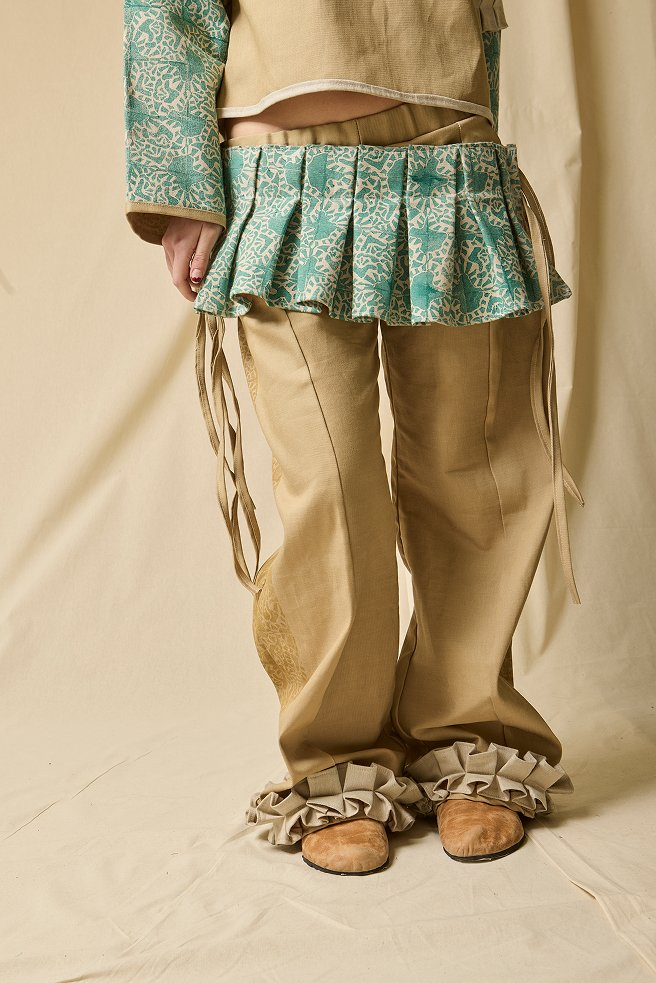
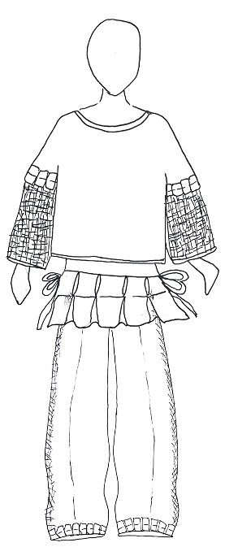

Nómada
Colección indumentaria
Este proyecto nace como un encargo sobre diseñadores latinoamericanos contemporáneos interesados en expandir sus propuestas y explorar nuevos mercados. A partir del análisis de un diseñador latinoamericano de referencia, se desarrolla una colección propia.
Se propone una línea unisex outdoor, pensada para personas que se desplazan constantemente dentro y fuera de la ciudad. La colección busca combinar la comodidad urbana con la funcionalidad de prendas técnicas de montaña, manteniendo una visión contemporánea y coherente del diseño.
Además, se incorpora la intervención de textiles mediante estampados como recurso para aportar identidad y valor visual a las superficies.
La sostenibilidad se considera un aspecto importante dentro del proceso, buscando que cada decisión de diseño responda a una propuesta más consciente, funcional y actual.
Casilda Mut
Esta colección toma como base de inspiración el lenguaje de diseño de la marca mexicana Casilda Mut, reinterpretando sus principales características desde una propuesta propia. Se retoman elementos como las siluetas amplias, la superposición de capas, los volúmenes estructurados, pliegues y amarres, así como la experimentación con textiles de apariencia natural y detalles de inspiración artesanal. Manteniendo el equilibrio entre funcionalidad, diseño contemporáneo y la revalorización de las técnicas artesanales, aspectos que definen la identidad estética de la marca y sirven como punto de partida para el desarrollo de esta colección.






